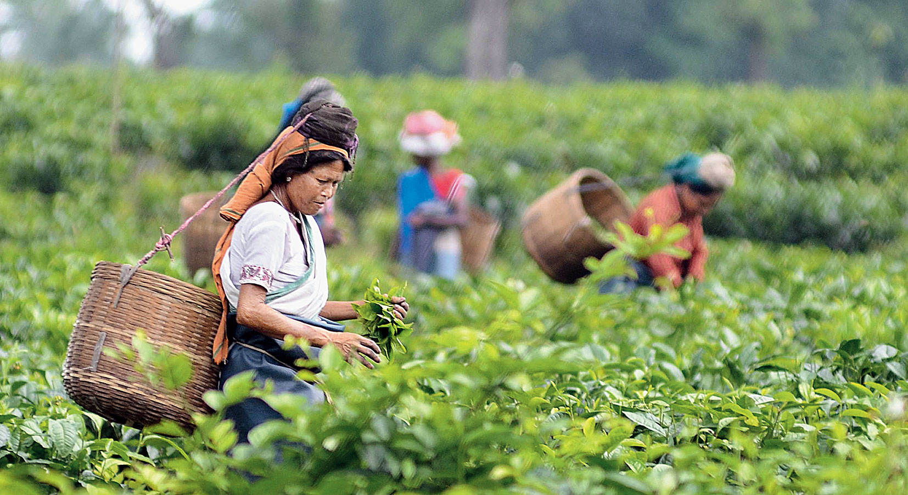

All About- 'Assam'
Assam is a state in northeastern India known for its wildlife, archeological sites and tea plantations.
In the west, Guwahati, Assam’s largest city, features silk bazaars and the hilltop Kamakhya Temple.
The capital of Assam is 'Dispur', a suburb of Guwahati.
The population of Assam as of 2012 is estimated to be 3.09 crores.
Assam covers an area of approximately 78,438 km².

Culture of Assam
The people living in Assam speak many languages. The official language of the state is Assamese.
The most spoken languages in Assam are-

Assam is home to many communities: Mongoloid, Indo-Burmese, Indo-Iranian, Aryan, Rabha, Bodo, Kachari,
Karbi, Mising, Sonowal Kacharis, Mishimi and Tiwa. These cultures come together to create an Assamese culture.
Bihu and Huchory are the most popular dances from Assam.
Dance forms of tribal minorities are some of the major folk dances, too.